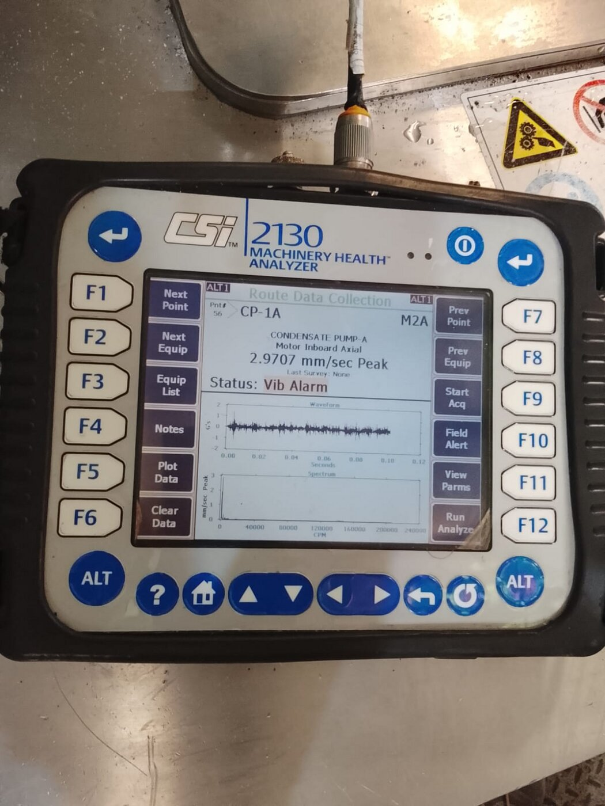
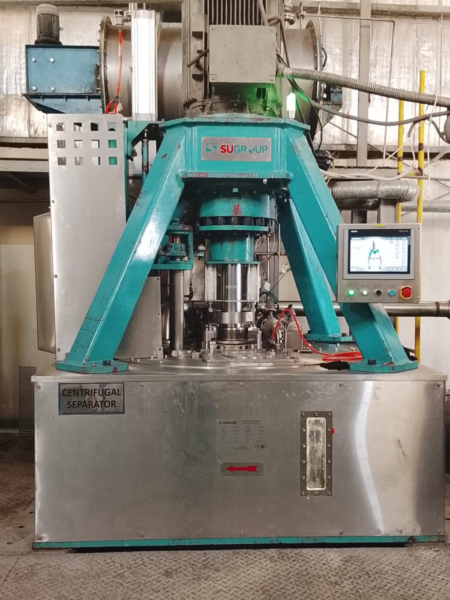
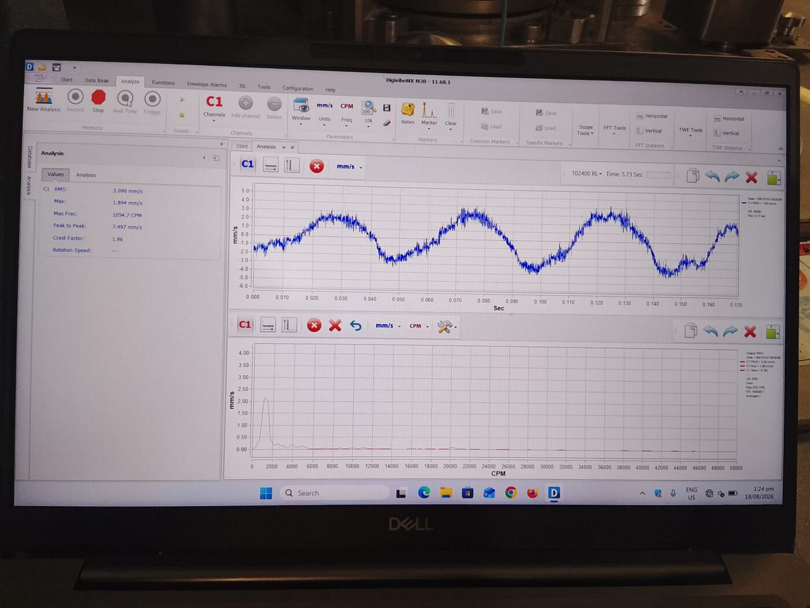
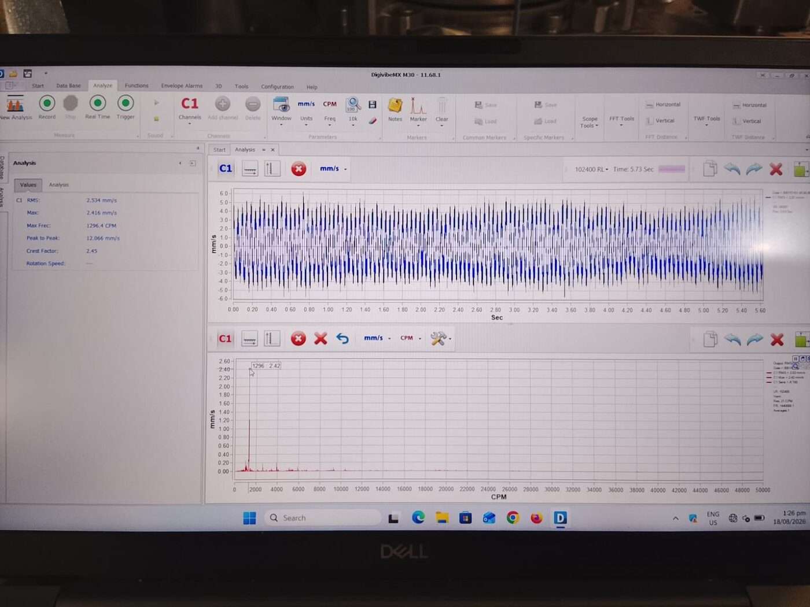
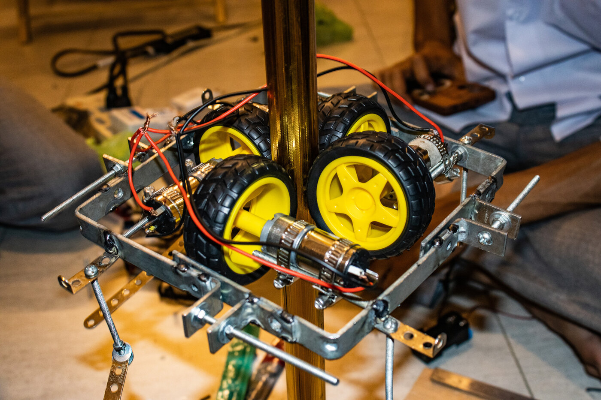
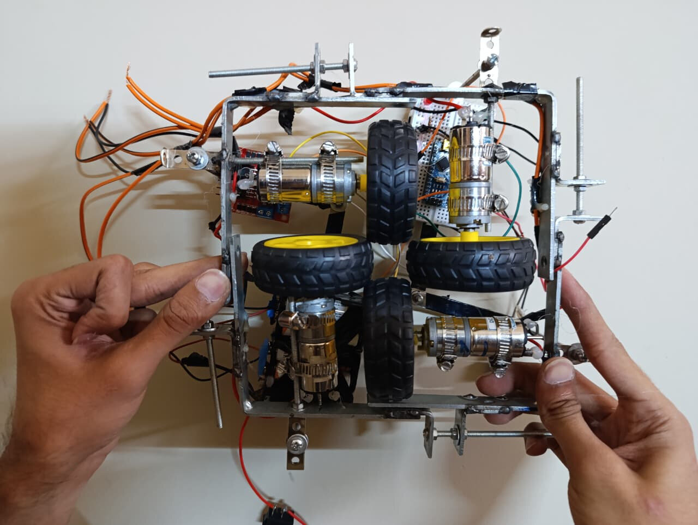
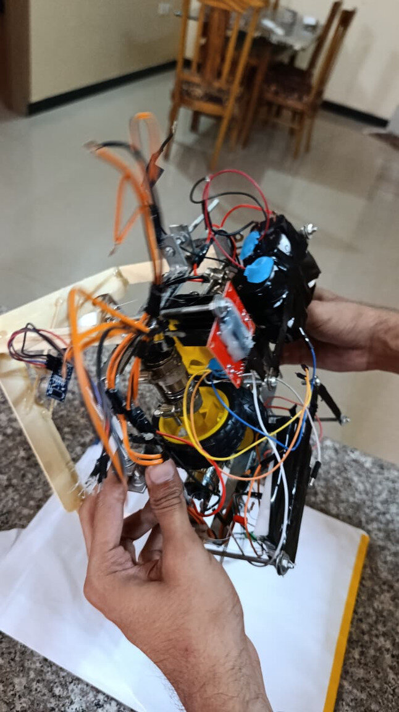

Mechanical Engineering · Technical Portfolio
UMAIR
AMIR
Mechanical Engineering Student · NUST Karachi (PNEC) · Expected 2028
Reliability·Predictive Diagnostics·MRO·Industrial Optimization·Mechatronics
- 01Vibration Diagnostics & Predictive MaintenanceTurbo Machinery Services · Matco Foods Centrifuge Case
- 02Autonomous Pipe-Climbing RobotMechatronics · AKDC Challenge 2026, 1st Place
- 03Multi-Loop Process Control & InstrumentationControls · Aqualoop Virtual Process Simulation
- 04Aircraft MRO Reliability EngineeringFMEA · RCA · RCM/MSG-3 · PIA Engineering & Maintenance
- 05Motorcycle Final-Assembly Line OptimizationIndustrial Optimization · Independent Case Study
Project 01 · Predictive Diagnostics · Turbo Machinery Services Internship
Vibration Diagnostics: Centrifugal Separator, Matco Foods
2.97 mm/s vs. 1.5 mm/s BASELINE
Field vibration diagnosis during a rotating-equipment internship at Turbo Machinery Services (Karachi), on a client job at Matco Foods Ltd. Measured, CSI 2130 / DigivibeMX


A route check crossed the site's vibration-alarm threshold. The rest of the case works through one question: rotor imbalance, or something upstream of the rotor.
Signal Processing: Time Domain → FFT


- Elevated vibration flagged on route
- Time waveform shows a modulated envelope rather than the steady 1X signature a clean rotor imbalance would produce
- RMS and peak frequency shift across successive captures rather than holding constant
- Readings tracked against batch timing pointed to a faulty liquid glucose batch, not rotor imbalance, as the driver.
- Motor
- Shaft
- Separator
- Aerated batch / variable density
Aerated batch → variable density → effective eccentricity → rotating force F=mω²r → vibration, without a mechanical defect behind it.
- ROTOR BALANCING · CEMB Z2000, ISO 1940
- Kaprico motor rotor, G6.3
- Hubco TDBF cartridge, G2.5 @ 5400 rpm
- THERMAL SPRAY · Metco 16E / TAFA 400
- post sand-blast surface restoration
Project 02 · Mechatronics · Team Design Challenge
Autonomous Pipe-Climbing Robot
1ST PLACE · AKDC CHALLENGE 2026
Abul Kalam Azad Design Challenge (IMechE), 2026, a five-member team design-build competition. Team Ascendants: M. Hassaan, Emmanuel Shamim, Ahsan Akram, Umair, M. Yasir. Team Project
How can a compact, four-wheel mechanism autonomously climb a 22 mm vertical pipe while holding sufficient contact force, and execute a controlled payload release, within a 400 mm × 300 mm envelope?
- Max envelope 400 mm dia. × 300 mm length
- Green LED continuously on during run
- Climb 22 mm vertical copper pipe
- Red LED + buzzer at defined events
- Fully autonomous operation required
- Friction force (μN) must exceed robot weight

- Motor torque
- Contact force
- Friction
- Climbing capability
Design constraint: Friction Force (μN) ≥ Weight of Robot
- Sensor input
- Arduino Nano
- Decision
- Servo / motor action
Sequence: climb → hold 10s at top (red LED + buzzer) → descend to midpoint → release chain → return to start
Rigid slotted-metal frame with movable brackets: tightening or loosening the mounting screws expands or contracts the wheel assembly, so the same frame adapts its contact force to different pipe diameters. Four motor-driven, rubber-tired wheels (67 mm dia.) press against the pipe in a symmetrical arrangement, keeping weight distribution balanced and resisting tilt while climbing. High-torque, low-speed gear motors provide the controlled vertical motion the friction budget requires.


- CONTROLLER
- Arduino Nano
- ACTUATION
- 4× gear motor + release servo
- SENSING
- Ultrasonic + limit switches
- POWER
- 12V rechargeable battery
- PAYLOAD
- Hook-and-chain, servo release
Project 03 · Process Control & Instrumentation · Independent Software Project
Aqualoop: Virtual Multi-Loop Process Control & Instrumentation
2 COUPLED LOOPS · 11 EXPERIMENTS · 62 TESTS
A Python process tank with a level PI loop and a temperature PID loop, imperfect virtual sensors, fault injection and a Streamlit dashboard. Simulated data, not measured
View source on GitHub
Explicit Euler · dt 1 s · seed 42
Simulation only. Plant parameters are engineering assumptions, not fitted to a physical rig.
Reproducible. 62 tests pass and all 11 experiments regenerate from one command.
Project 04 · Reliability Engineering · PIA Engineering & Maintenance Internship
Aircraft MRO Reliability Engineering: FMEA, RCA & RCM/MSG-3
16 FAILURE MODES · 3 METHODS · 1 REAL INCIDENT
Three independent case studies built from a four-week internship rotation through Base Maintenance, Components Maintenance Division, and Powerplant Overhaul. Ratings and conclusions are the author's own application of each method to field observation, not PIA's internal reliability data. Internship: PIA Engineering & Maintenance
16 failure modes across five functional areas, scored on Severity × Occurrence × Detection (1-10 each).
The two highest-RPN entries are organizational gaps with no formal control at all; both outrank the most severe mechanical failure mode on the table.
5-Why, Fishbone, and Fault Tree Analysis run side by side on the same recurring problem: a bench-test component missing its 3-day turnaround target (slipping to 7-10 days).
| 5-WHY | Fast | 1 chain |
| FISHBONE | Broad | No ranking |
| FAULT TREE | Slow | Logic-exact |
All three converge on the same fixable cause: the fault coupon has no field to flag a component as urgent, and no process revisits documentation when the workflow changes.
Task order: Lubrication/Servicing → On-Condition → Hard-Time → Condition-Monitoring → Redesign (if none apply)
- ENGINE/APU: on-condition (chip detectors + borescope)
- BRAKES: hybrid (700-800 landings + wear-pin + thermal sensor)
- WHEELS/TIRES: hard-time (2,500 landings + multi-method NDT)
Engine/APU failure modes sit in the flat middle (on-condition wins); wheels, tires and life-limited rotor parts sit in the rising tail (hard-time wins); engineered fail-safes cover the early-life gap no schedule can close.
One Incident, Three Lenses
PK-306
A PIA A320 landed safely in Lahore after departing Karachi missing a main-gear wheel; no injuries. The event runs through all three studies: FMEA maps it to the highest-severity mechanical entry on the table (wheel assembly separation); RCA compares it against a hypothetical delay scenario as a worked real-world example of causal-method rigor; RCM/MSG-3 uses it to show why hard-time retirement, multi-method NDT, and engineered fail-safes (fuse plug, redundant gear geometry) exist as layered controls rather than one line of defense. The public root cause was never conclusively confirmed (reported contributing factors span foreign-object debris, a possible material or manufacturing defect, and maintenance-related factors), and that uncertainty is treated as data, not glossed over.
- BRAKE DISCS
- steel: cheaper, shorter life (ATR 42)
- carbon: lighter, higher heat capacity (ATR 72+)
- TIRES
- Bridgestone: 300-350 landings
- Michelin: 500-550 landings
- both retreadable up to 3×
A longer-life material only pays for itself if the maintenance program is built to extract that life, not retired conservatively out of habit.
| MEL CAT A | fix within 24 hr |
| MEL CAT B | fix within 3 days |
| MEL CAT C | fix within 10 days |
| MEL CAT D | fix within 120 days |
Same severity-to-urgency logic as MSG-3, applied to dispatch. Every on-condition task above is only as good as the tool measuring it; handheld gear is recalibrated every 6 months, fixed tooling every year.
Project 05 · Industrial Optimization · Independent Case Study
Value Stream Mapping, Takt Time & Line Balancing
66% → 77% BALANCING EFFICIENCY
Station 7 (electrical harness) ran at 58s, 110% of the 52.5s takt time, and paced the whole line. Moving roughly 12s of preliminary harness-routing work to Station 6 (handlebar/controls, which had 22.5s of spare capacity) respects assembly precedence and uses no new equipment. The new bottleneck, Station 13, sits at 95% of takt.
S6 (handlebar/controls, 30s) immediately precedes S7 and had 22.5s of spare capacity against takt. Preliminary harness routing along the handlebar area needs the handlebar in place, not the ignition or lighting circuits connected, so it can move upstream to S6 without violating assembly order. S6: 30→42s. S7: 58→46s. Total work content is unchanged at 499s across all 13 stations; only the two adjusted stations move.
The rebalance fixes takt compliance, not lead time on its own; total processing stays at 499s. The ~46% lead-time cut is driven mainly by shrinking two of the four buffers with kanban-style pull signals, since buffer stock, not assembly work, made up the large majority of the original 6.4-hour lead time.
Where the Buffers Actually Moved
- Demonstrates the VSM → takt → line-balancing method end to end on a representative 13-station line
- Every number traces to a stated assumption or a simple calculation, not a black box
- Does not claim access to any company's actual production data or floor time
- Does not claim the line-balancing move alone produced the lead-time result; buffer policy did most of that work